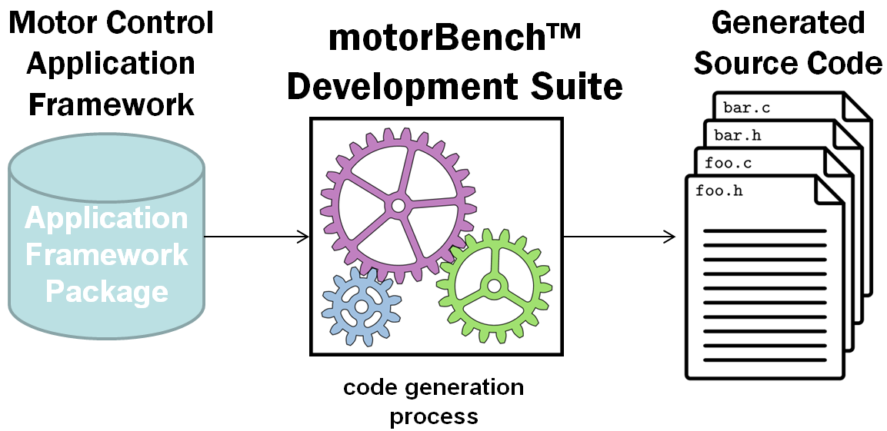

1. Introduction¶
The Motor Control Application Framework (or MCAF) is Microchip’s next-generation application firmware for motor control on dsPIC® DSC devices. This differs from the firmware for previously-published application notes such as AN1078 and AN1292, in a few significant aspects, most notably that the MCAF is integrated with motorBench® Development Suite.
Essentially there is a firmware package included with motorBench® Development Suite that contains the Motor Control Application Framework. This package consists of files used to generate code into any desired MPLAB® X project. Think of it as a motor control code factory, or as a “prepackaged meal” — but for firmware code instead of dinner — that includes both recipes and ingredients. The application framework is “rendered” into a particular instance of application source code by motorBench® Development Suite, based on configuration information, automated motor parameter measurements, and the resulting calculations to tune motor control loops.
This approach provides two major advantages:
- Management of multiple hardware configurations — by using code generation, the MCAF can support the many combinations of processor, board, PIM, motor, and load with a single firmware package.
- Automation of the tuning process — motorBench® Development Suite includes algorithms that will automatically tune the current and velocity controllers.
In addition, Microchip has made many improvements in code quality, to make the firmware more readable and modular, and reduce barriers in applying this firmware to use in customer applications. We hope you benefit from these improvements in your next motor control project.